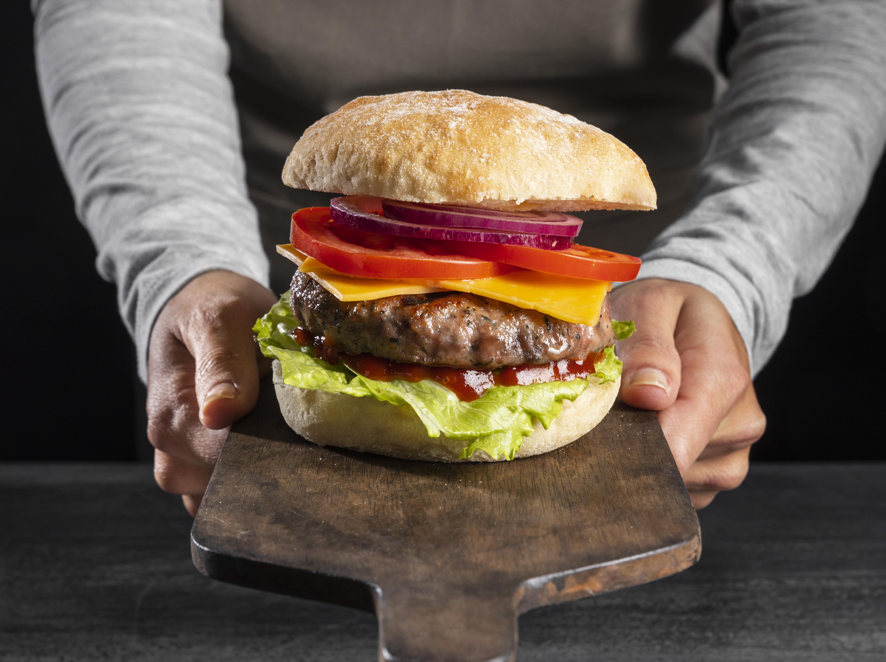

Receitas de Hamburguer
Hambúrguer de Carne Caseiro

Criada por: Chefe Paulo
Atualizada em: 04/10/2025
Separe alguns minutos para preparar um delicioso hambúrguer artesanal, com carne bovina suculenta e temperos simples. Ideal para lanches, festas ou um almoço prático.
Ingredientes do Hambúrguer
- 500 g de carne moída (patinho ou acém)
- 1 colher (chá) de sal
- 1/2 colher (chá) de pimenta-do-reino
- 1 colher (sopa) de cebola ralada
- 1 dente de alho picado
- 1 colher (chá) de molho inglês
- 1 colher (sopa) de azeite de oliva
Ingredientes para montar
- Pães de hambúrguer
- Queijo (mussarela, cheddar ou prato)
- Folhas de alface e fatias de tomate
- Maionese, ketchup ou molho da sua preferência
Modo de preparo
- Em uma tigela, misture bem a carne moída, o sal, a pimenta, a cebola, o alho, o molho inglês e o azeite.
- Divida a massa em porções e modele os hambúrgueres, achatando levemente com as mãos.
- Aqueça uma frigideira antiaderente ou grelha e grelhe cada hambúrguer por cerca de 3 a 4 minutos de cada lado, até ficarem dourados.
- Se quiser, adicione o queijo sobre o hambúrguer ainda na frigideira e tampe por 1 minuto para derreter.
- Monte o lanche: abra o pão, adicione o hambúrguer, o queijo, o alface, o tomate e o molho.
- Sirva em seguida, acompanhado de batatas fritas ou salada.